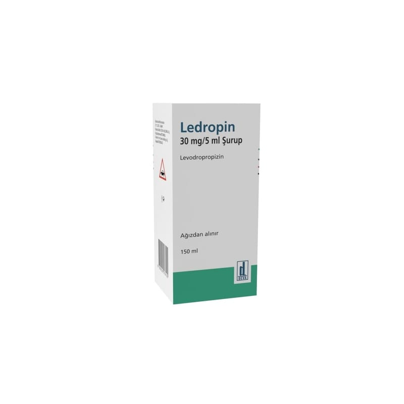

Ledropin 30 mg/5 ml Şurup, 150 ml

Ne için kullanılır
KT · Bölüm 1LEDROPİN, HDPE plastik kapaklı Tip III cinsinde 150 mL’lik amber renkli cam şişede, 3 mL ve 5 mL çizgileri olan plastik kaşık ile beraber sunulan kiraz kokulu, renksiz, gözle görülen yabancı madde içermeyen şuruptur.
LEDROPİN etkin madde olarak levodropropizin içerir.
Çeşitli nedenlere bağlı kuru öksürüğün giderilmesinde kullanılır.